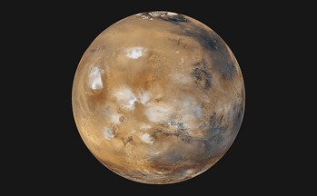

모듈 2. 인공지능 챗봇과 함께 공부해요!
1 / 6
아래는 민지가 행성 설명 프로그램을 만들기 위해 인공지능 챗봇의 도움을 받으려고 합니다. 민지가 해야 할 일을 고르세요.
화성
화성(火星, Mars)은 태양계의 4번째 행성이다. 산화철로 인한 붉은 빛이 감도는 사막 지형이 형성되어 있다. 이러한 이유로 '붉은 행성(Red Planet)'이라고도 불린다.
화성에는 두 개의 위성, 포보스(Phobos)와 데이모스(Deimos)가 있다. 이 두 위성은 1877년 미국의 천문학자 홀(Asaph hall)에 의해서 발견되었다.
